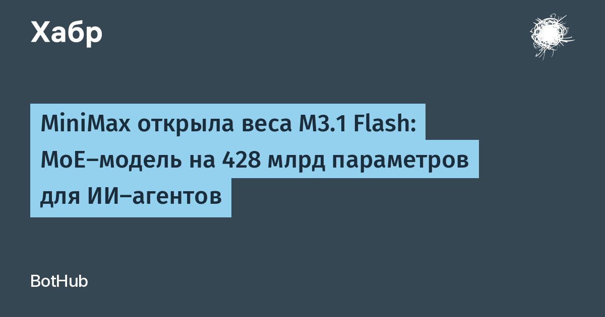

Компания MiniMax 23 октября опубликовала открытые веса модели M3.1 Flash на Hugging Face. Это next-generation «Flash»-модель для агентных задач:программирования, многошаговых цепочек с вызовом инструментов, управления компьютером и анализа уязвимостей. Всего в архитектуре MoE около 428 млрд параметров, но на каждый токен активируется примерно 23 млрд — отсюда высокая скорость инференса. Модель принимает текст, изображения и видео, контекстное окно достигает миллиона токенов.
Официальный анонс приводит такие цифры: 73,7% на DeepSWE v1.1 (сложные задачи разработки), 61,7 балла на OSWorld V2 (управление компьютером), 76,2 на BankerToolBench (финансовые сценарии с инструментами) и 82,2% на CyberGym — тесте поиска и проверки уязвимостей. Именно CyberGym делает модель интересной для безопасности: это один из лучших открытых результатов в агентном фаззинге и анализа кода. При этом лидером во всех категориях M3.1 Flash не стала: на DeepSWE у DeepSeek V4.1 Flash-1017 — 77%, а на OSWorld у Claude Opus 5 — 70,6.
За скорость отвечают три механизма: разреженное внимание MiniMax Sparse Attention, спекулятивное декодирование DSpark и обучение с учётом квантизации (QAT). Компания обещает nearly трёхкратный рост скорости онлайнового инференса и снижение стоимости использования на 70% по сравнению с предыдущим поколением. Любопытная деталь из анонса: анонимный аккаунт «Space Bunny», накануне обработавший более 200 трлн токенов на открытых платформах, оказался ранней версией этой модели.
Веса доступны под MiniMax Community License, в документации есть инструкции для vLLM и SGLang. Но 23 млрд активных параметров не означают, что хватит памяти под такой объём: хранить нужно весь набор весов, а это порядка 250 ГБ даже в 8-битной сборке — потребуется серьёзная многокарточная инфраструктура или сильно квантизованная сборка. Для тех, у кого такой инфраструктуры нет, модель остаётся доступной через MiniMax API и их агентский продукт MiniMax Code.